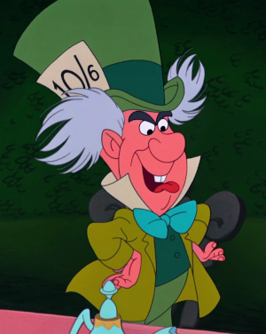

In what concerns the continuous evaluation solving exercises grade during the semester, you should submit until 23:59 of November 1st
(this exercise will still be available for submission after that deadline, but without counting towards your grade)
[to understand the context of this problem, you should read the class #04 exercise sheet]
In this problem you should submit a function as described. Inside the function do not print anything that was not asked!
The name of the .py source file you submit to Mooshak should NOT start with a digit (you will get an error if you submit it like that).

It was then that the Mad Hatter popped up from behind his teapot tower, tipping his oversized hat and grinning from ear to ear.Well, well! I see you’ve been entertaining our dear Caterpillar and those troublesome twins, but now it’s my turn!" he exclaimed. His eyes twinkled as he twirled a cup of tea in one hand. "You see, I’m mad about extremes—yes, the beginning and the end, the first and the last, the maximum and the minimum!"
Write a function extremes(words) that given a tuple words containing several strings, return a tuple (a,b) where a is the length of the smallest string and b is the length of the largest string.
The following limits are guaranteed in all the test cases that will be given to your program:
| 1 ≤ |words| ≤ 100 | number of words | |
| 1 ≤ |wi| ≤ 100 | size of each word |
| Example Function Calls | Example Output |
|---|---|
print(extremes( ("Alberto", "Francesco", "Miriam", "Pedro", "Tadeu") ))
print(extremes( ("c/c++", "java", "python", "prolog", "haskell",) ))
print(extremes( ("portugal", "spain", "italy") ))
|
(5, 9) (4, 7) (5, 8) |
Content by Pedro Ribeiro and Bernardo Portela (DCC/FCUP), migrated from dcc.fc.up.pt/~pribeiro/aulas/ip2526/problems/ip038.html.